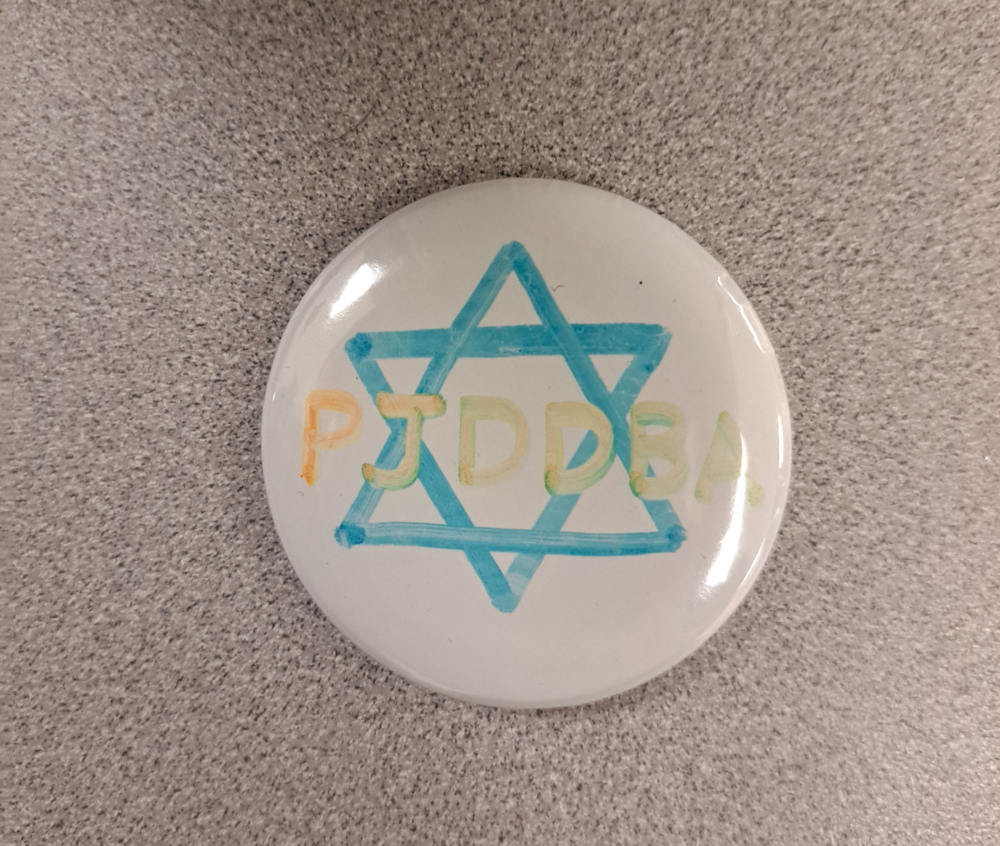

The Survival Challenge projects are mini projects which show our abilities to create many solutions for the survival piece we will need when we get to the park. For the first challenge, we were tasked to create a project where we use wind to generate electricity using a motor to turn on an LED. Our design was sturdy with one of the best designs for the fixation of the gears, and completed the task with generating 1.7 volts.
The compass challenge was to use the compass to hide an object while using directions and distances and being able to find it again. We had many attemps to ensure that we didn't hit a dead end with our instructions.
The objective of this challenge was to transport a bucket of water without spilling the water as much as you can. We had to transport it from the garage doors to the baseball diamond homebase (around 140m), using a trolly. Our time limit was 5 mins to transport it. When we hit halftime, our group wasn't half way there, and decided to carry the trolly towards the homebase. Our water height was 11in.
The objective of this challenge was to catch as many "fish" as possible. Those at the surface had a point worth of 1, while those under the water had a value of 3. We had 5 minutes to compose a design and 5 minutes to construct it and capture the fish. The design consisted of a stick with four fish eyes to hold the line, a hook, and a small weight attached to the end. We successfully caught numerous fish with a total value of 13 points.